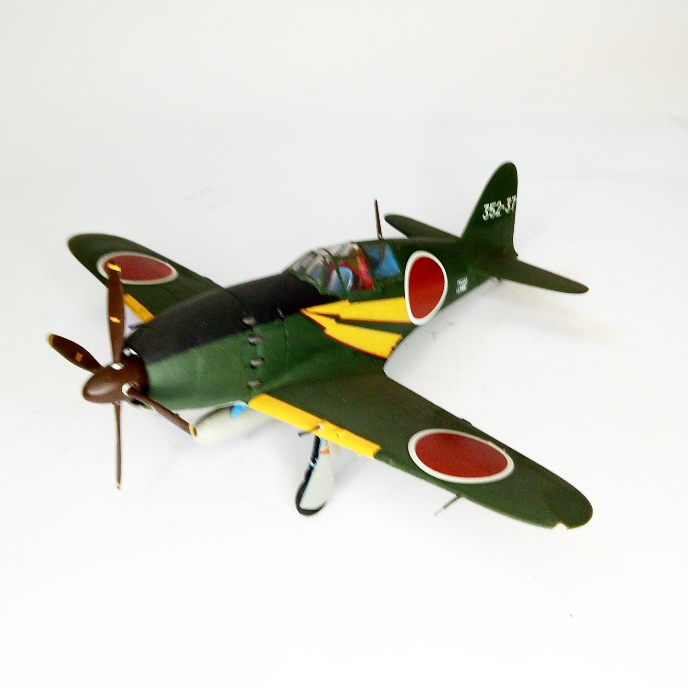

Aerei · scale model archive
Mitsubishi J2M3 Raiden
Mitsubishi J2M3 Raiden — Kit: Tamiya, Scale: 1/48. Yoshiro Aoki 352 FG Kanoya AB April 1945 Fighter aircraft with interesting aerodynamic design. #1/48…

Photo gallery
English description
Yoshiro Aoki 352 FG Kanoya AB April 1945
Fighter aircraft with interesting aerodynamic design.
#1/48 #Tamiya
Descrizione italiana
Yoshiro Aoki 352 FG Kanoya AB aprile 1945.
Figther aereo con interessante aerodynamic progetto.